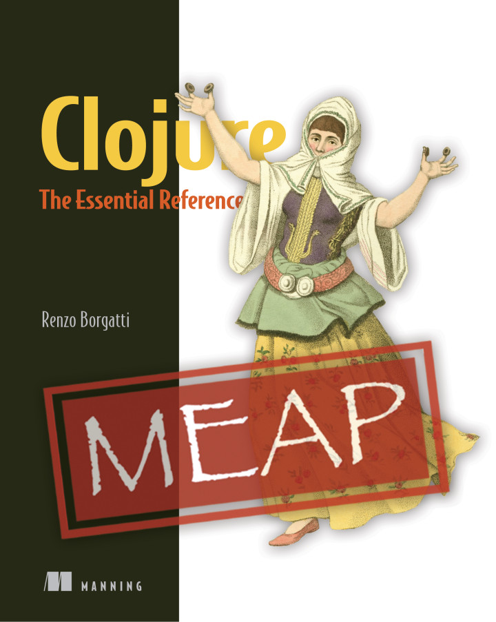

pmap pvalues pcalls (lazy, sequential, chunked)reducers/fold (work-stealing, fork-join)future, agent, etc.core.async pipelines (external lib)pmap)| Name | Description |
|---|---|
p/let |
Parallel let binding. |
p/slurp |
Parallel slurping files. |
p/count |
Transducer-aware parallel core/count. |
p/frequencies |
Parallel core/frequencies |
p/group-by |
Parallel core/group-by |
| Name | Description |
|---|---|
p/update-vals |
Updates values in a map in parallel. |
p/external-sort |
Memory efficient, file-based, parallel merge-sort. |
p/sort |
Parallel core/sort. |
p/fold |
Transducer-aware r/fold. |
| Name | Description |
|---|---|
p/min and p/max |
Parallel core/min and core/max functions. |
p/distinct |
Parallel version of core/distinct |
p/amap |
Parallel array transformation. |
p/armap |
Parallel array reversal with transformation. |
| Name | Description |
|---|---|
xf/interleave |
Like core/interleave, transducer version. |
xf/pmap |
Like core/pmap, transducer version. |
xf/identity |
Alternative identity transducer to core/identity |
